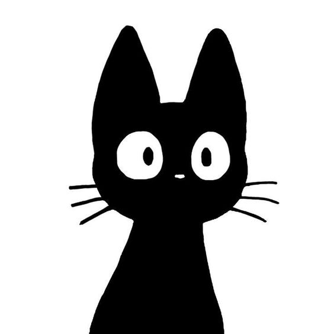

Marion
Portrait chinois :
Si j'étais un instrument de musique je serais une guitare 🎸
J'adore la musique et je joue de la guitare depuis que j'ai sept ans.
Si j'étais un jeu vidéo je serais Zelda Tears of the Kingdom 🗡️
Le meilleur jeu selon moi, très complet et qui laisse beaucoup de place à l'imagination et à la créativité ce qui me représente bien.
Si j'étais une série je serais superstore 🏪
Une de mes séries préférées qui dénonce le traitement des employés dans les supermarchés tout en restant dans la comédie.
Si j'étais une boisson je serais du jus d'abricot 🍹
C'est ma boisson préférée : doux et bien sucré. Et c'est aussi mon pseudo.
Si j'étais une saison je serais l'automne 🍂
C'est la saison de mon anniversaire et d'halloween. C'est aussi la saison qui arrive après le pire moment de l'année : l'été.
On parle de moi :
M… Magnifique, Magistral, Mucho bueno, Mont-saint-Michel … la lettre M évoque tant de choses merveilleuses, mais la plus brillante, vous en conviendrez, est Marion.
Seule la capitale pouvait espérer être digne de voir naître en son sein Marion, c'est donc à Paris qu'elle ouvrit les yeux, il y a de cela 24 glorieuses années.
Dès ses 7 ans, Marion dompte les arts en s'accaparant d'une guitare pour ne plus jamais la lâcher. Elle lead un groupe de rock pendant son lycée, dont Kirk Hammett dira je cite “They déchire.”.
Depuis sa jeunesse, la lecture est pour elle un échappatoire au parfois trop lourd fardeau de sa destinée. Elle s'imprègne des philosophies de ses auteurs préférés, entre autres Becky Chambers et Samantha Shannon, et construit sa propre façon de voir le monde.
Véritable diamant parmi les perles, Marion est fascinée par nous autres, pauvres humains. Elle se lance donc dans l'anthropologie. Voyant que malgré tous ses efforts, elle n'arriverait jamais à aider tous les mortels, elle quitte cette voie et part faire un service civique de 1 an.
A son retour (célébré comme il se doit par la nation), Marion devient libraire. Cette période de réflexion lui permet de se découvrir sa vraie passion : le dev.
D'ailleurs, la vie le présageait, car Marion aime les jeux vidéos. Possesseuse de la MasterSword, Marion s'illustre autant dans sa vie en ligne qu'IRL. Un petit studio lui dédiera d'ailleurs un jeu en changeant légèrement son nom : Mario(n)Kart.
Merci Marion pour ce moment, puissent les étoiles guider tes pas autant que tu guides les nôtres.
- Kilian